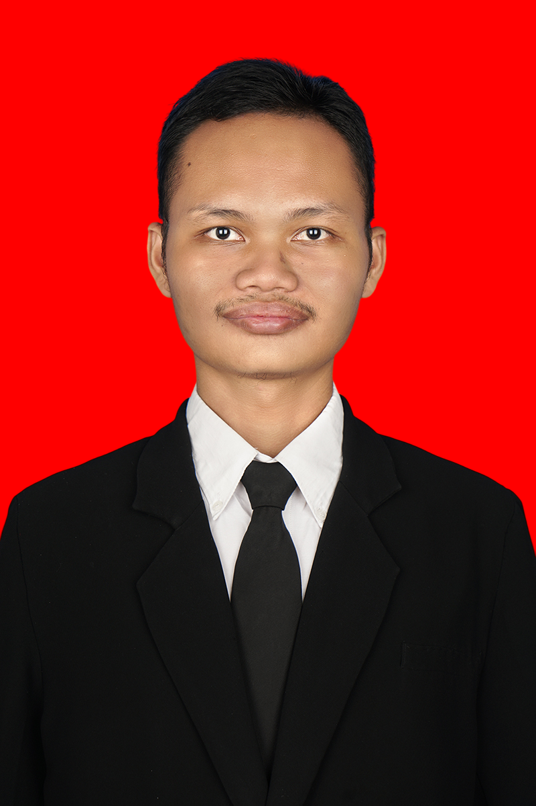

Praktik Reflektif,
Menuntun Nalar Matematis.
Selamat datang di portal E-Portfolio Praktik Pengalaman Lapangan (PPL) Mandiri. Situs ini mendokumentasikan secara sistematis perjalanan profesional saya sebagai calon guru Matematika di SMAN 6 Yogyakarta—mulai dari observasi ekosistem sekolah, praktik mengajar terbimbing, hingga pelaksanaan empat siklus mengajar mandiri untuk pemenuhan tugas Ujian Tengah Semester (E-Portfolio 1) dan Ujian Akhir Semester (E-Portfolio 2).
Rifqi Fausta Dianta (NIM: 251415046)
PPG Calon Guru Matematika — Universitas Sanata Dharma
DPL: Veronika Fitri Rianasari, Ph.D.
Guru Pamong: Sri Lestari, S.Pd.

Model Guru yang Dituju & Filosofi Mengajar
Perancang Pengalaman Belajar (*Learning Designer*) yang Humanis, Inklusif, dan Reflektif
Sosok guru yang saya tuju bukanlah penceramah tunggal yang sekadar memindahkan rumus ke papan tulis, melainkan seorang fasilitator konstruksi nalar yang peka terhadap kesiapan kognitif dan kondisi sosial-emosional murid. Saya berkomitmen menjadi guru matematika yang menghadirkan ruang kelas aman dari rasa takut salah (*psychologically safe*), merancang *scaffolding* adaptif sesuai kapasitas murid, serta mengintegrasikan teknologi dan konteks nyata agar matematika bermakna bagi kehidupan mereka.
Kesiapan ini juga diwujudkan melalui komitmen inklusivitas nyata—termasuk menyesuaikan aksesibilitas visual media ajar di kelas serta mempelajari dasar Bahasa Isyarat Indonesia (BISINDO) dan huruf Braille agar siap merangkul keberagaman peserta didik tanpa terkecuali.
Menuntun Kodrat Anak Melalui *Deep Learning* & Pemberdayaan Kemandirian
Berpijak pada pemikiran Ki Hadjar Dewantara (Sistem Among), saya meyakini bahwa murid bukanlah lembaran kosong (*tabula rasa*). Pendidik diibaratkan sebagai petani yang merawat tumbuhnya benih sesuai kodrat alam dan kodrat zamannya. Wibawa guru tidak dibangun dari ancaman atau hukuman, melainkan melalui keteladanan (*Ing Ngarsa Sung Tuladha*), pembangunan karsa (*Ing Madya Mangun Karsa*), dan dorongan kemandirian (*Tut Wuri Handayani*).
Dalam pembelajaran matematika, filosofi ini saya terjemahkan ke dalam kerangka Deep Learning (*Mindful, Meaningful, Joyful*): menghadirkan kesadaran penuh melalui regulasi emosi (Teknik STOP), mengaitkan konsep abstrak dengan masalah kontekstual yang dekat dengan murid, serta menghargai setiap proses bertumbuh (*process-praise* & *The Power of Yet*).
Galeri Artefak & Analisis Praktik PPL Mandiri
Pilih tab di bawah ini untuk meninjau hasil observasi lingkungan sekolah, refleksi terbimbing, serta perangkat lengkap dan analisis kritis artefak untuk UTS (Siklus 1) maupun UAS (Siklus 2 s.d. 4).
Topik: Fungsi Komposisi (Pemetaan Tiga Himpunan & Syarat Komposisi)
Siklus Mandiri 1 dilaksanakan dengan memadukan pendekatan Pembelajaran Sosial-Emosional (PSE) teknik STOP (hening sejenak 2 menit), analogi visual konkret (mesin pengolah padi $\rightarrow$ beras $\rightarrow$ nasi), dan diskusi kelompok kecil heterogen berbantuan tutor sebaya (*peer tutor*) multimodal untuk melacak alur pemetaan tiga himpunan serta syarat keberadaan fungsi komposisi.
Daftar Artefak Terbaik Siklus 1 & Analisis Kajian Teori
Rancangan Pembelajaran Mandiri (RPM) Siklus 1 — Fungsi Komposisi
Disusun sebagai tindak lanjut evaluasi siklus terbimbing (memadatkan manajemen waktu dan membangun keakraban kelas). Bertujuan memandu murid memahami proses berantai fungsi komposisi $(g \circ f)(x)$ serta mengidentifikasi syarat irisan daerah hasil fungsi pertama dengan daerah asal fungsi kedua ($R_f \cap D_g \neq \emptyset$).
Mengintegrasikan mata kuliah PPDP (Teori Konstruktivisme Piaget: menjembatani konsep abstrak melalui analogi konkret mesin produksi; Sosiokultural Vygotsky: pemberdayaan ZPD melalui tutor sebaya) serta PSE CASEL (kesadaran diri dan manajemen diri melalui teknik STOP di awal pembelajaran).
Alur kegiatan dirancang sangat sistematis dengan memadukan kesiapan psikologis (STOP), jembatan analogi sehari-hari yang intuitif, pembagian kelompok heterogen terukur, hingga penarikan kesimpulan reflektif mandiri (*Assessment as Learning*).
Rancangan belum dilengkapi instrumen pengecekan mandiri (*self-check guide*) tertulis bagi siswa dan panduan afirmasi spesifik bagi tutor sebaya, sehingga murid masih sering ragu dan bergantung pada konfirmasi lisan guru di setiap langkah.
Salindia Interaktif Analogi Mesin Produksi & Skema Diagram Panah Tiga Himpunan
Digunakan sebagai panduan visual utama di kelas untuk mengilustrasikan proses input-output bertahap (padi menjadi beras, beras menjadi nasi) dan memandu langkah investigasi kelompok di buku catatan masing-masing.
Mengaplikasikan prinsip PMAL (Desain Universal Pembelajaran / UDL) melalui *Multiple Means of Representation* (visualisasi skema mesin dan diagram panah) serta prinsip Teknologi Baru dalam Pengajaran untuk memstrukturkan alur inkuiri kelas.
Ilustrasi visual skema mesin dan diagram panah sangat efektif mempermudah murid menangkap konsep abstrak bahwa keluaran fungsi pertama menjadi masukan bagi fungsi kedua.
Ukuran *font* pada beberapa bagian teks penjelasan dan soal di salindia masih terlalu kecil serta kepadatan teks per slide cukup tinggi. Hal ini menyulitkan murid di barisan tengah hingga belakang (khususnya yang bermata minus) untuk membaca instruksi dengan jelas.
Rekaman Video Praktik Mengajar Mandiri Siklus 1
Dokumentasi autentik pelaksanaan pembelajaran Siklus 1 dari tahap pembukaan (hening sejenak STOP & apersepsi), fasilitasi diskusi kelompok, presentasi murid di papan tulis, hingga penutupan reflektif.
Mencerminkan penerapan Filosofi Pendidikan Ki Hadjar Dewantara (menuntun antusiasme murid tanpa paksaan), PSE (mengubah kecanggungan awal menjadi fokus belajar dan *productive noise*), serta Growth Mindset (*process-praise* saat murid maju ke depan kelas).
Iklim kelas berubah jauh lebih cair dibanding siklus terbimbing; antusiasme murid memuncak saat berebut maju ke papan tulis untuk menuliskan diagram panah dan alur penyelesaian kelompoknya.
Saat berkeliling membimbing kelompok, guru terkadang masih langsung memberikan validasi "benar/salah" atas pertanyaan murid, alih-alih melontarkan pertanyaan pemantik balik (*probing questions*) untuk membangun efikasi diri murid.
Sampel Catatan Investigasi Kelompok & Kotak "Kesimpulan Penting Hari Ini"
Kumpulan hasil pengerjaan murid di buku tulis yang memuat pelacakan diagram panah tiga himpunan, perumusan fungsi komposisi, serta rangkuman metakognitif pada kotak "Kesimpulan Penting Hari Ini".
Mengaplikasikan konsep PMAL (*Assessment for Learning* & *Assessment as Learning*) di mana murid menilai dan menyarikan sendiri pemahaman esensialnya di akhir sesi belajar.
Menunjukkan keterlibatan kognitif yang utuh; murid mampu menuliskan langkah penyelesaian secara runtut dan merumuskan simpulan dengan bahasa mereka sendiri secara reflektif.
Karena dikerjakan langsung di buku catatan masing-masing merujuk layar salindia (tanpa lembar kerja cetak terstruktur), beberapa murid sempat lambat menyalin skema awal akibat kendala keterbacaan font slide dari belakang kelas.
Refleksi Akhir PPL Mandiri: Kekuatan, Kelemahan & Rencana Tindak Lanjut
- 1. Kemampuan Kontekstualisasi & Analogi Konkret: Mampu menerjemahkan materi abstrak matematika Fase F ke dalam analogi intuitif dan konteks lintas disiplin sesuai profil murid (mesin pengolahan padi-beras-nasi, enkripsi sandi rahasia, data koperasi, hingga pemodelan spasial-ekonomi Karhutla).
- 2. Responsivitas Reflektif Antar-Siklus: Cepat menindaklanjuti temuan kendala di kelas dan saran Guru Pamong—terbukti dari perbaikan drastis keterbacaan salindia dan desain LKM ber-*scaffolding* dari Siklus 1 ke Siklus 2 dan 3.
- 3. Pengondisian Iklim Sosial-Emosional Kelas: Konsisten membiasakan regulasi emosi melalui teknik STOP dan membangun komunikasi yang menghargai proses berpikir murid.
- 1. Pengawasan Akuntabilitas Individu dalam Kelompok: Dalam diskusi kelompok dan *tutor sebaya*, masih ditemukan celah terjadinya *pemahaman semu* (Siklus 2) dan ketimpangan beban kerja proyek poster (Siklus 4) yang merugikan perolehan nilai sumatif murid pasif.
- 2. Pemodelan Instruksi Teknis Aktivitas Kompleks: Pada penerapan metode dinamis seperti *Gallery Walk* (Siklus 4) atau apersepsi tabel tanpa label (Siklus 3), orientasi aturan main di awal masih perlu dimodelkan lebih eksplisit agar murid tidak bingung.
- 3. Antisipasi Ketelitian Algoritmik/Prosedural Murid: Perlu menyediakan alat bantu visual (*visual-tracing*) yang lebih rinci saat mengajarkan prosedur aljabar padat seperti perkalian matriks.
Rencana Tindak Lanjut (RTL) Praktik Profesional
Menerapkan sintaks Think-Pair-Share (TPS) berbantuan E-Worksheet/LKM terstruktur yang mewajibkan fase berpikir individu sebelum berdiskusi, dilengkapi *individual contribution sheet*, *peer-assessment*, dan *exit ticket* mandiri 1 soal di setiap akhir kegiatan inti.
Merancang aktivitas Guided Discovery agar murid menemukan sendiri sifat-sifat konsep matematika, sembari menyematkan panduan *visual-tracing* (kode warna dan penanda arah) serta latihan bergradasi untuk meningkatkan ketelitian prosedural aljabar.
Menyediakan visualisasi aturan main dan simulasi singkat (*role modeling*) di salindia sebelum memulai metode pembelajaran interaktif (*Gallery Walk* / proyek), serta mendokumentasikan jurnal refleksi tertulis setiap selesai mengajar.